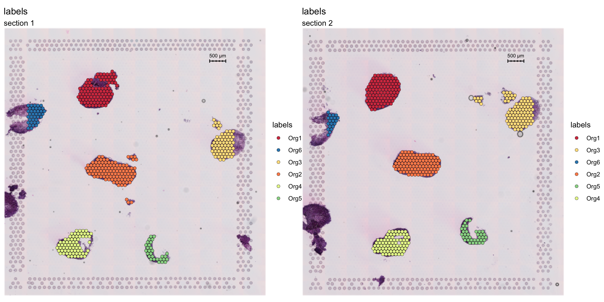

Last updated: 2022-02-28
Checks: 6 1
Knit directory: STUtility_web_site/
This reproducible R Markdown analysis was created with workflowr (version 1.7.0). The Checks tab describes the reproducibility checks that were applied when the results were created. The Past versions tab lists the development history.
Great! Since the R Markdown file has been committed to the Git repository, you know the exact version of the code that produced these results.
Great job! The global environment was empty. Objects defined in the global environment can affect the analysis in your R Markdown file in unknown ways. For reproduciblity it’s best to always run the code in an empty environment.
The command set.seed(20191031) was run prior to running the code in the R Markdown file. Setting a seed ensures that any results that rely on randomness, e.g. subsampling or permutations, are reproducible.
Great job! Recording the operating system, R version, and package versions is critical for reproducibility.
Nice! There were no cached chunks for this analysis, so you can be confident that you successfully produced the results during this run.
Using absolute paths to the files within your workflowr project makes it difficult for you and others to run your code on a different machine. Change the absolute path(s) below to the suggested relative path(s) to make your code more reproducible.
| absolute | relative |
|---|---|
| ~/workflowr/STUtility_web_site/pre_data/organoids/ | pre_data/organoids |
| ~/workflowr/STUtility_web_site/pre_data/organoids/se_object | pre_data/organoids/se_object |
Great! You are using Git for version control. Tracking code development and connecting the code version to the results is critical for reproducibility.
The results in this page were generated with repository version 64ae8be. See the Past versions tab to see a history of the changes made to the R Markdown and HTML files.
Note that you need to be careful to ensure that all relevant files for the analysis have been committed to Git prior to generating the results (you can use wflow_publish or wflow_git_commit). workflowr only checks the R Markdown file, but you know if there are other scripts or data files that it depends on. Below is the status of the Git repository when the results were generated:
Ignored files:
Ignored: .Rhistory
Ignored: analysis/.DS_Store
Ignored: analysis/manual_annotation.png
Ignored: pre_data/
Note that any generated files, e.g. HTML, png, CSS, etc., are not included in this status report because it is ok for generated content to have uncommitted changes.
These are the previous versions of the repository in which changes were made to the R Markdown (analysis/Split_Data.Rmd) and HTML (docs/Split_Data.html) files. If you’ve configured a remote Git repository (see ?wflow_git_remote), click on the hyperlinks in the table below to view the files as they were in that past version.
| File | Version | Author | Date | Message |
|---|---|---|---|---|
| html | d41bcb0 | Ludvig Larsson | 2022-02-28 | Build site. |
| html | 46d6570 | Ludvig Larsson | 2022-02-28 | Build site. |
| Rmd | 060b185 | Ludvig Larsson | 2021-06-29 | Added link to README |
| html | 0dafcee | Ludvig Larsson | 2021-05-06 | Build site. |
| html | df62517 | Ludvig Larsson | 2021-05-06 | Build site. |
| html | 88b046f | Ludvig Larsson | 2021-05-05 | Build site. |
| html | f34bd02 | Ludvig Larsson | 2021-05-05 | wflow_git_commit(all = TRUE) |
| Rmd | f8f90b4 | Ludvig Larsson | 2021-05-05 | wflow_git_commit(all = TRUE) |
| html | e0390c8 | Ludvig Larsson | 2021-05-05 | Update |
| html | 4af6496 | Ludvig Larsson | 2021-05-05 | Updated tutorials |
| html | b88bd19 | Ludvig Larsson | 2021-05-05 | Build site. |
| html | e526be2 | Ludvig Larsson | 2021-05-05 | Build site. |
| html | 3a8eb02 | Ludvig Larsson | 2021-05-04 | Build site. |
| Rmd | dfc9b23 | Ludvig Larsson | 2021-05-04 | Added split data tutorial |
| html | 395091f | Ludvig Larsson | 2021-05-04 | Build site. |
| Rmd | caf5937 | Ludvig Larsson | 2021-05-04 | Added split data tutorial |
| html | da131a6 | Ludvig Larsson | 2021-05-04 | Build site. |
| Rmd | 7444d06 | Ludvig Larsson | 2021-05-04 | Added split data tutorial |
library(STutility)
library(magrittr)
library(dplyr)
library(Seurat)First, you need to make sure that the images that you provide to InputFromTable are in high resolution. The images output by spaceranger called “tissue_hires_image.png” are 2000 pixels wide which is typically too low resolution if you want to split your Visium capture area into multiple smaller ones. What this means is that in addition to the spaceranger output you will need the HE images in high resolution and you might have to do some additional tweaks to make things work properly.
In the example provided here, the HE images were downscaled to 30% of the original size (~14000x14000 pixels). You can use the original HE images in full resolution as well, but these are a little bit easier to work with. But just to make things more complicated, the pixel coordinates prvovided in the “tissue_positions_list.csv” files (spaceranger output) will give the spot pixel coordinates mapped to the full resolution image, so we have to scale down these pixel coordinates to make them work with our downscaled HE images.
Normally, you would provide a JSON file with scalefactors to the InputFromTable function so that it knows how to scale the pixel coordinates approproiately. Now that we’re using a higher resolution HE image we need to set the parameter scaleVisium manually to tell InputFromTable how to scale the pixel coordinates.
Here we’ll set scaleVisium = 0.3 to tell InputFromTable that the the scale factor between the HE image and the pixel coordinates is 0.3.
samples <- list.files(path = "~/workflowr/STUtility_web_site/pre_data/organoids/", pattern = "filtered_feature_bc_matrix.h5", recursive = T, full.names = T)
imgs <- list.files(path = "~/workflowr/STUtility_web_site/pre_data/organoids/", pattern = "small.jpg", recursive = T, full.names = T)
spotfiles <- list.files(path = "~/workflowr/STUtility_web_site/pre_data/organoids/", pattern = "tissue_positions_list.csv", recursive = T, full.names = T)
infoTable <- data.frame(samples, imgs, spotfiles,
sample_id = c("A1", "B1"),
stringsAsFactors = F)
# Set scaleVisium = 0.3 and skip the json column in the infoTable
se <- InputFromTable(infoTable, scaleVisium = 0.3)To split the data into smaller sets, all you need to do is to specify a “crop geometry” for each region that you want to keep as a separate dataset.
The easiest way to do this is to just open the HE image (same as used above), create a rectangle marking out the area that you want to keep and note the width, height, offeset along x-asis and offset along y-axis of the rectangle. For example, let’s say you want to keep a rectangular area which is 1000 pixels wide, 900 pixels high and offset by 400 pixels along both the x and y axis, the crop geometry would be written as “1000x900+400+400”.
grop geometry = “(width)x(height)+(x offset)+(y offset)”
Another way to do this, which is perhaps faster, is to define the crop geometries based on spot selection.
Let’s have a look at the HE image. Here we have a few organoids places on a Visium capture area that we want to separate.
se <- LoadImages(se, time.resolve = FALSE)ImagePlot(se, method = "raster")
| Version | Author | Date |
|---|---|---|
| da131a6 | Ludvig Larsson | 2021-05-04 |
Now, let’s label these organoids using the ManualAnnotation function. (NOTE: if the size of the inputHE image is large, the shiny app can take quite some time to start up)
se <- ManualAnnotation(se)We can exclude any spots that were not labelled and visualize the selection.
# Create a new column with the organoid labels
se$organoid <- factor(se$labels, levels = paste0("Org", 1:6))
organoid.cols <- setNames(RColorBrewer::brewer.pal(n = 6, name = "Spectral"), nm = paste0("Org", 1:6))
# Subset data to exclude non-labelled spots
se <- SubsetSTData(se, expression = organoid %in% paste0("Org", 1:6))
# Plot organoid selections
FeatureOverlay(se, features = "labels", sampleids = 1:2, ncols = 2, cols = organoid.cols)
To generate the crop geometries, we first need to access the pixel coordinates. Then we can use the selections to determine the size and position of a rectangular window that encompass a selection of interest.
Once the crop geometries have been creates, you can create a named list to defined what section is being split, for example:
crop_windows <- list("1" = "1000x900+400+400", "2" = "1000x900+700+800")
will crop out a “1000x900+400+400” rectangle from section “1” and a “1000x900+700+800” rectangle from section “2”.
# Get pixel coodinates
pxs <- cbind(GetStaffli(se)@meta.data[, c("pixel_x", "pixel_y", "sample")], selection = se$organoid)
# Split pixel coodinates data.frame by section
pxs.split <- split(pxs, pxs$sample)
# Create crop geometries
pxs.split <- setNames(lapply(pxs.split, function(pxs) {
sel.split <- lapply(split(pxs, pxs$selection), function(pxs) {
m <- apply(pxs[, 1:2], 2, range) # Find centroids
centroid <- apply(m , 2, mean) # Find centroids
hw <- apply(m, 2, function(x) round(diff(range(x)))) + 400 # Get height/width and add some extra space
offsets <- centroid - max(hw)/2 # Find offsets
geometry <- magick::geometry_area(width = max(hw), height = max(hw), x_off = offsets[1], y_off = offsets[2])
})
}), nm = unique(pxs$sample))
# Collect crop areas
crop.windows <- do.call(c, lapply(unique(pxs$sample), function(s) {
crop_geometries <- setNames(pxs.split[[s]], nm = rep(s, length(pxs.split[[s]])))
}))
crop.windows$`1`
[1] "2492x2492+3819+2020"
$`1`
[1] "3102x3102+4253+6568"
$`1`
[1] "2524x2524+10557+4737"
$`1`
[1] "2231x2231+2681+10416"
$`1`
[1] "1766x1766+7359+10954"
$`1`
[1] "1614x1614+945+3973"
$`2`
[1] "2214x2214+3263+2373"
$`2`
[1] "2833x2833+4776+5845"
$`2`
[1] "3528x3528+9123+2703"
$`2`
[1] "2312x2312+3644+10338"
$`2`
[1] "1703x1703+8423+10040"
$`2`
[1] "1610x1610+871+4336"To do the actual splitting, you need to run CropImages from STUtility. This step can take some time to run depending on the size of the input HE images and the number of regions to crop out.
# Crop data
se.cropped <- CropImages(se, crop.geometry.list = crop.windows, time.resolve = TRUE, verbose = TRUE) Reading /Users/ludviglarsson/workflowr/STUtility_web_site/pre_data/organoids//V19D02-088_A1/200722_LungOrganoid_V19D02-088.A1-Spot000001_small.jpg for sample 1 ...
Reading /Users/ludviglarsson/workflowr/STUtility_web_site/pre_data/organoids//V19D02-088_A1/200722_LungOrganoid_V19D02-088.A1-Spot000001_small.jpg for sample 1 ...
Reading /Users/ludviglarsson/workflowr/STUtility_web_site/pre_data/organoids//V19D02-088_A1/200722_LungOrganoid_V19D02-088.A1-Spot000001_small.jpg for sample 1 ...
Reading /Users/ludviglarsson/workflowr/STUtility_web_site/pre_data/organoids//V19D02-088_A1/200722_LungOrganoid_V19D02-088.A1-Spot000001_small.jpg for sample 1 ...
Reading /Users/ludviglarsson/workflowr/STUtility_web_site/pre_data/organoids//V19D02-088_A1/200722_LungOrganoid_V19D02-088.A1-Spot000001_small.jpg for sample 1 ...
Reading /Users/ludviglarsson/workflowr/STUtility_web_site/pre_data/organoids//V19D02-088_A1/200722_LungOrganoid_V19D02-088.A1-Spot000001_small.jpg for sample 1 ...
Reading /Users/ludviglarsson/workflowr/STUtility_web_site/pre_data/organoids//V19D02-088_B1/200722_LungOrganoid_V19D02-088.B1-Spot000001_small.jpg for sample 2 ...
Reading /Users/ludviglarsson/workflowr/STUtility_web_site/pre_data/organoids//V19D02-088_B1/200722_LungOrganoid_V19D02-088.B1-Spot000001_small.jpg for sample 2 ...
Reading /Users/ludviglarsson/workflowr/STUtility_web_site/pre_data/organoids//V19D02-088_B1/200722_LungOrganoid_V19D02-088.B1-Spot000001_small.jpg for sample 2 ...
Reading /Users/ludviglarsson/workflowr/STUtility_web_site/pre_data/organoids//V19D02-088_B1/200722_LungOrganoid_V19D02-088.B1-Spot000001_small.jpg for sample 2 ...
Reading /Users/ludviglarsson/workflowr/STUtility_web_site/pre_data/organoids//V19D02-088_B1/200722_LungOrganoid_V19D02-088.B1-Spot000001_small.jpg for sample 2 ...
Reading /Users/ludviglarsson/workflowr/STUtility_web_site/pre_data/organoids//V19D02-088_B1/200722_LungOrganoid_V19D02-088.B1-Spot000001_small.jpg for sample 2 ... Now each organoid should be treated as a separate dataset.
ImagePlot(se.cropped, method = "raster", ncols = 6)
VlnPlot(se, features = "nFeature_RNA", group.by = "organoid")
A work by Joseph Bergenstråhle and Ludvig Larsson
sessionInfo()R version 4.0.3 (2020-10-10)
Platform: x86_64-apple-darwin13.4.0 (64-bit)
Running under: macOS Mojave 10.14.6
Matrix products: default
BLAS/LAPACK: /Users/ludviglarsson/anaconda3/envs/R4.0/lib/libopenblasp-r0.3.12.dylib
locale:
[1] en_US.UTF-8/en_US.UTF-8/en_US.UTF-8/C/en_US.UTF-8/en_US.UTF-8
attached base packages:
[1] stats graphics grDevices utils datasets methods base
other attached packages:
[1] dplyr_1.0.8 magrittr_2.0.1 STutility_0.1.0 ggplot2_3.3.5
[5] SeuratObject_4.0.0 Seurat_4.0.2 workflowr_1.7.0
loaded via a namespace (and not attached):
[1] utf8_1.2.1 reticulate_1.18 tidyselect_1.1.1
[4] htmlwidgets_1.5.3 grid_4.0.3 Rtsne_0.15
[7] munsell_0.5.0 codetools_0.2-18 ica_1.0-2
[10] units_0.7-1 future_1.21.0 miniUI_0.1.1.1
[13] withr_2.4.1 colorspace_2.0-0 highr_0.8
[16] knitr_1.31 uuid_0.1-4 rstudioapi_0.13
[19] ROCR_1.0-11 tensor_1.5 listenv_0.8.0
[22] labeling_0.4.2 git2r_0.28.0 polyclip_1.10-0
[25] farver_2.1.0 rprojroot_2.0.2 coda_0.19-4
[28] parallelly_1.25.0 LearnBayes_2.15.1 vctrs_0.3.8
[31] generics_0.1.0 xfun_0.20 R6_2.5.0
[34] doParallel_1.0.16 Morpho_2.8 ggiraph_0.7.8
[37] manipulateWidget_0.11.0 spatstat.utils_2.2-0 assertthat_0.2.1
[40] promises_1.2.0.1 scales_1.1.1 imager_0.42.8
[43] gtable_0.3.0 globals_0.14.0 bmp_0.3
[46] processx_3.5.1 goftest_1.2-2 rlang_1.0.1
[49] zeallot_0.1.0 akima_0.6-2.1 systemfonts_1.0.1
[52] splines_4.0.3 lazyeval_0.2.2 spatstat.geom_2.3-0
[55] rgl_0.105.22 yaml_2.2.1 reshape2_1.4.4
[58] abind_1.4-5 crosstalk_1.1.1 httpuv_1.5.5
[61] tools_4.0.3 spData_0.3.8 ellipsis_0.3.2
[64] spatstat.core_2.3-0 raster_3.4-10 jquerylib_0.1.3
[67] RColorBrewer_1.1-2 proxy_0.4-25 Rvcg_0.19.2
[70] ggridges_0.5.3 Rcpp_1.0.6 plyr_1.8.6
[73] classInt_0.4-3 purrr_0.3.4 ps_1.6.0
[76] rpart_4.1-15 dbscan_1.1-6 deldir_1.0-6
[79] pbapply_1.4-3 viridis_0.6.1 cowplot_1.1.1
[82] zoo_1.8-9 ggrepel_0.9.1 cluster_2.1.1
[85] colorRamps_2.3 fs_1.5.0 data.table_1.14.0
[88] magick_2.7.2 scattermore_0.7 readbitmap_0.1.5
[91] gmodels_2.18.1 lmtest_0.9-38 RANN_2.6.1
[94] whisker_0.4 fitdistrplus_1.1-3 matrixStats_0.58.0
[97] patchwork_1.1.1 shinyjs_2.0.0 mime_0.10
[100] evaluate_0.14 xtable_1.8-4 jpeg_0.1-8.1
[103] gridExtra_2.3 compiler_4.0.3 tibble_3.1.6
[106] KernSmooth_2.23-18 crayon_1.4.1 htmltools_0.5.1.1
[109] mgcv_1.8-34 later_1.1.0.1 spdep_1.1-7
[112] tiff_0.1-8 tidyr_1.2.0 expm_0.999-6
[115] DBI_1.1.1 MASS_7.3-53.1 sf_0.9-8
[118] boot_1.3-27 Matrix_1.3-2 cli_3.1.1
[121] gdata_2.18.0 parallel_4.0.3 igraph_1.2.6
[124] pkgconfig_2.0.3 getPass_0.2-2 sp_1.4-5
[127] plotly_4.9.3 spatstat.sparse_2.0-0 foreach_1.5.1
[130] bslib_0.2.4 stringr_1.4.0 callr_3.7.0
[133] digest_0.6.27 sctransform_0.3.2 RcppAnnoy_0.0.18
[136] spatstat.data_2.1-0 rmarkdown_2.7 leiden_0.3.7
[139] uwot_0.1.10 gdtools_0.2.3 shiny_1.6.0
[142] gtools_3.8.2 lifecycle_1.0.1 nlme_3.1-152
[145] jsonlite_1.7.2 viridisLite_0.4.0 fansi_0.4.2
[148] pillar_1.7.0 lattice_0.20-41 fastmap_1.1.0
[151] httr_1.4.2 survival_3.2-10 glue_1.4.2
[154] png_0.1-7 iterators_1.0.13 class_7.3-18
[157] stringi_1.5.3 sass_0.3.1 irlba_2.3.3
[160] e1071_1.7-6 future.apply_1.7.0